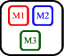
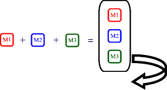

Edward Harned (eh at coopsoft dot
com)
Senior Developer, Cooperative Software Systems, Inc.
August, 2011
The Problem
Activities often need a form of background processing that does not involve the User Interface, such as:
- downloading files from the internet
- CPU intensive tasks
- networking that blocks
- to name just a few
There are two general purpose methods available for developers outside the UI environment:
- Application threads
- Services
Managing application threads can be a nightmare.
- There is no facility to control threads. Each main thread must control its own new threads.
- What if a thread hangs in a never-ending thread loop?
- What if a thread abnormally terminates?
- What if the thread create/destroy overhead bogs down the overall processing?
- What if a thread needs timing?
- What if a thread needs canceling?
- What is the status of a thread?
- How to detect and recover from dead/live locks?
- How to tune this threading environment?
- How can we inquire about the overall health of the environment?
- How may the thread environment quiesce and shut down gracefully?
- Since all threads share the execution context (address space, I/O buffers, save areas, handles) with each other, a misbehaving thread can irreparably damage an application — just as one bad apple can ruin the entire barrel.
- Declaring too many threads can easily impact other applications in other address spaces. This is often called not playing nice with others in the device.
- When starting a new thread what you are really doing is starting a backend-process. (The main thread relinquishes control to the backend-process; often called an inversion of control.)
- There is no way to kill a thread without endangering the execution context and/or risking inconsistent states in shared objects.
- The list goes on and on but the main point is control. In a multi-threading application it is critical to be able to control both the main thread and the new threads as well.
Services offer a cleaner environment for an activity to handle a single chore.
- But Services run in the main thread of their hosting process. If the service is going to do any significant background processing (as above), it should spawn its own threads in which to do that work.
- In order for a remote Service to handle multiple requests from other activities, multi-threading is the only solution. Services also are not the easiest component in the Android™ library to master especially when using Inter Process Communication.
And we're right back where we started with all the problems of managing application threads.
In a nutshell, we have a two-fold problem:
- We need a general purpose thread manager
- We need a general purpose Android™ Service framework
Now that you understand the problem, it's time to meet the solution.
The Android™ Solution
Welcome to Tymeac™ (pronounced Tie-Mack) Tymeac is an acronym for asYnchronous Thread Manager and Easy Assembly of Components.
Tymeac is a fork-join Android™ Service framework that runs both locally and remotely.
Tymeac is a superb implementation of a simple concept:
Put requests in queues for processing by asynchronous threads.
Since Tymeac deals with threads, Tymeac controls those threads very, very well.
Tymeac for Android™ is an Open Source Software product maintained on
and you can download the latest edition there.Overview
Just how does Tymeac work?
Tymeac places your simple request into a Queue 
or uses fork-join logic to fork your multi-part
request into its components and places each
component into its respective Queue.
 A thread, in the thread pool of each Queue:
fetches the request,
executes the request by using reflection to call your user-written class,
and returns any return data from your class to you or on to another process.
For the simple request, Tymeac passes back the return data to the caller.
For the multi-part request, Tymeac concatenates the return data from all the components into a Parcelable array (joins) and returns the array to the caller.

And there's more. Autonomous requests; Futures; Extensive error recovery; Lots, lots more.
By always separating the request from the requester (either embedded within an application or remotely using Inter Process Communication), Tymeac can manage the Queues and Threads no matter where the requester lives. Tymeac handles those vexing issues mentioned above as well as:
- components (a request with multiple parts),
- recursion (when nested levels of access are necessary),
- persistence (for shared objects between threads),
- run-time alteration (to provide a dynamic response to an ever changing environment.),
- extensions to the base logic (start-up/shutdown hooks and exits),
- logging (of errors and events),
- and, never forget debugging.
Examples
The file downloader:
Set up a Queue with one or more threads. Write the application class to fetch a file from the Internet and store it on the device or pass it back to the caller.
Execute the service method synchronously and wait for a reply or asynchronous and have the application send a broadcast when complete.
CPU Intensive tasks, games, or when the whole is the sum of its parts:
Set up multiple Queues each with one or more threads. Write the application classes that can work on selective parts of the whole problem.
Execute the service method. Tymeac forks the request into its component Queues.
For synchronous requests, Tymeac waits for completion and returns a reply to the caller.
For asynchronous requests, Tymeac leaves it to the application to handle completion results.Portfolio valuation or trading:
Set up multiple Queues each with one or more threads. Write the application classes that go to the various markets to fetch the latest values/prices and store the results in a shared database.
Execute the service method asynchronously. Tymeac forks the request into its component Queues. The application runs continuously until manually stopped. Query the database and update the User Interface with the latest data.
The possibilities are endless.
Tymeac Service Management
Threads
Tymeac comprises queues with each queue having its own pool of threads. Every Queue Thread has its own management structure. Tymeac times each event in the life of a Queue Thread. Although there is no way to stop a thread, Tymeac handles the run-a-way or blocking-forever thread problems as best as can be handled at the application level.Decoupling
Threading logic is difficult; not the mainstay of most application developers. Tymeac decouples the threading logic from the application logic. Tymeac Queue Threads use reflection to "call" the application logic (user written Class.) Tymeac Queue Threads are part of the Tymeac management structure so application developers may concentrate on application logic. User Classes simply plug into a well managed multi-threading environment as components.NotifyAll
Both NotifyAll() and SignalAll() are shotgun methods. When the group awakens every thread must do some work to find out if it is needed. Even if each thread is running on a separate CPU it still requires operating system CPU cycles to get the threads running and put the unnecessary threads back into a blocking state.Tymeac notifies each thread individually — only when it is necessary. By having a management structure for each Queue Thread, Tymeac knows the exact status of each Queue Thread so there are no wasted context switches notifying unnecessary threads.
Thread pool
Tymeac's approach to the thread pool is to have only the minimum number of threads active at any given time so Tymeac plays nice with other applications.When a thread can process a request in a short time period, then using more than the minimum number of threads for a lightly loaded Queue is a waste of resources and may even slow down overall processing due to contention for memory, cycles and other assets. Tymeac supports Wait List thresholds for keeping the number of competing threads under control. (see High Performance Priority Queues in Java SE)
Speed
Tymeac is fast (thanks to the concurrency packages.) Access to threads and queues is with lock-free logic. Since there is no need for a thread to wait for another thread to release a resource, threads can run at full throttle. Naturally, when a thread has no work it enters a waiting state so it doesn't consume unnecessary cycles from others (another example of playing nice.)Monitoring
Since Java threads execute at the application level there is no high level manager to supervise the environment. Tymeac uses a Monitor (daemon) at the application level that periodically scans the environment looking for problems, notifying administrators when problems (real or potential) exist and recovering resources.Exceptions
When thread exceptions occur, Tymeac doesn't just let the system print an ugly message and kill the thread. Tymeac catches exceptions (including with an uncaught exception handler), prints and logs meaningful messages with full documentation, and notifies administrators of the problem.Since most errors are with the user-written Classes, Tymeac allows dynamic repair and reload of those Classes and restarting of the disabled threads.
Hint
By timing events in the life of a thread, this becomes possible.Expunged threads
If code becomes stuck forever (such as waiting for a resource that failed in another system or trapped in a never ending loop) then Tymeac permits administrators to expunge the thread and replace it with a fresh copy. The original thread recognizes it was expunged when it executes and terminates quickly.Tuning
Tymeac is tunable. Trying to manage traditional pool threads is like trying to herd cats. The Android™ version of Tymeac was built from the Java SE version of Tymeac which was built to be tunable since it was modeled on the Tymeac version that ran on high-performance Transaction Servers.Statistics
Statistics are the base for performance analysis and tuning.
- How many times were threads instantiated?
- How many requests did each thread process?
- How many times was a thread notified?
- How many waits [for work] expired?
- How many problems were caught?
- How many times was expunging necessary?
- How did the thread thresholds perform?
Tymeac professionalism reports statistics on request and at shut down.
Shut down
Every multi-threading application needs to shut down sometime. It can go kicking and screaming or it may quiesce and terminate gracefully. Quiesce means to quiet or calm. Tymeac multi-stage shut down quiets by rejecting new requests and letting those already in progress complete. When there is no more activity, Tymeac stops gracefully.A picture is worth a thousand words
Tymeac provides Activity UI's (and programming access) to the service environment so users may view and alter parameters dynamically.Tymeac controls threads the best threads can be controlled.
The Code
As with all software, the proof is in the code. Simply download the Open Source product with all the source and extensive documentation and see for yourself. After all, the price is right.


Conclusion
A Service framework is the best way to control both the Service and the application threads that make it function.
If it is too time-consuming to privately develop a multi-threading Service framework, then download the best thread manager for the Android™ platform that money can't buy.
Resources
Download the latest Android™ edition of Tymeac here.
High Performance Priority Queues in Java SE
http://coopsoft.com/ar/PriQueArticle.html
About the Author
Edward Harned is a software developer with over thirty years industry experience. He first led projects as an employee in major industries and then worked as an independent consultant. Today, Ed is a senior developer at Cooperative Software Systems, Inc., where, for the last thirteen years, he has used Java programming to bring multi-threading solutions to a wide range of tasks.